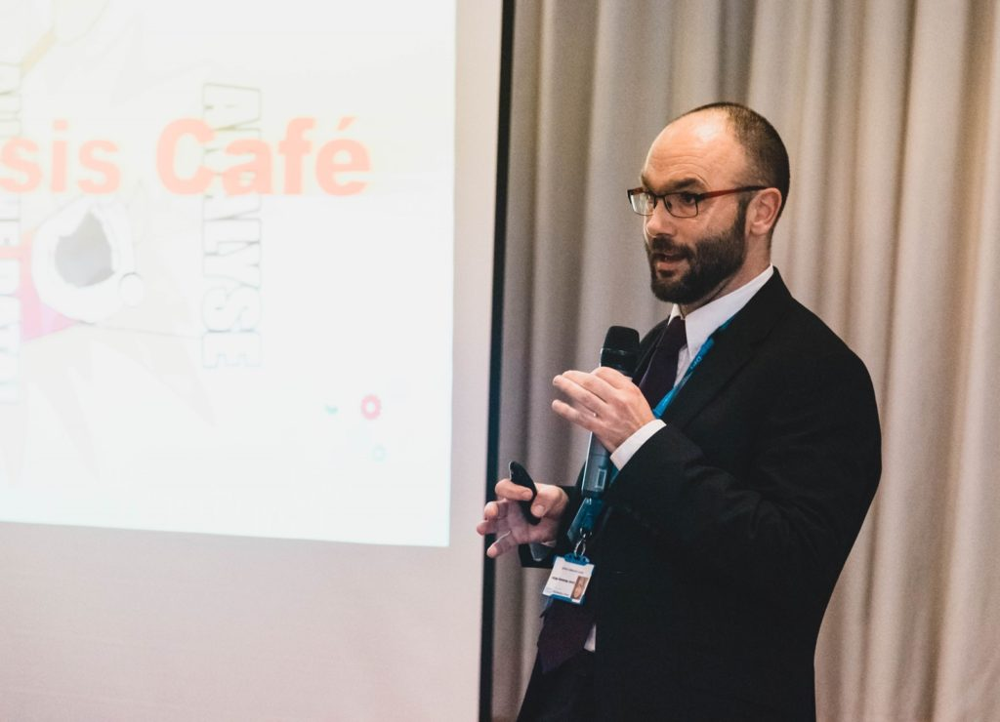
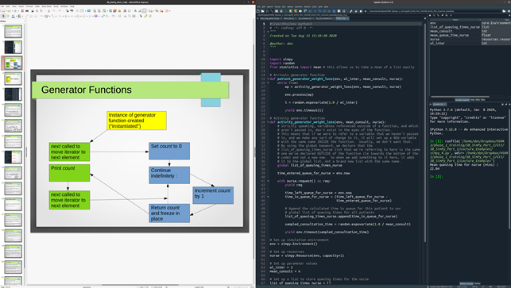

5 years ago our team brought into reality a vision that we’d had for some time. We recognised the vital importance of modelling, simulation, analytical and data science techniques to inform decision making in health and social care organisations. Indeed, our very existence was born out of a need to bring more of this stuff into practice – to work with health and social care partners to use these fancy methods to give them evidence to help them make decisions about problems they were facing. And we had (and continue to have) huge success from this – impactful work that makes a real difference to services and their patients. We’ve helped to transform the speed at which stroke patients can receive clot-busting treatment (). We’ve reduced the time taken to send bladder cancer patients for treatment in Cornwall by over 5 weeks when every day lost reduces their chances of survival (. We transformed the way in which dialysis services could handle the COVID-19 pandemic ().
This is all great, and it’s the reason we do what we do. It’s what led us to becoming applied researchers in the first place. But we’re a small team, with limited resource, and there’s only so much we can do. We saw that what was really needed was a push to build skills within health and social care organisations to be able to do this kind of stuff themselves – as a routine part of what they do. We needed to not only talk to them about what these methods could do, but show them how to do it. We also saw that analytical staff working in health and social care organisations are highly capable people who could do so much more with the data they’ve got, if only they had the knowledge (and time) to apply some of these methods.
So we introduced the Health Service Modelling Associates programme – or HSMA for short. The aims of HSMA were simple – help analysts develop skills in modelling, simulation and data science and help their organisation see the value by getting the newly skilled analyst to immediately put these skills into practice to solve a problem that’s important for the organisation. HSMAs get released for a day a week for a year, during which they get lots of training from us at the start, and then run with a project with our support and guidance.
HSMA has had a huge impact for the HSMAs, for their organisations and for patients. HSMA projects have led to brand new £multi-million mental health and urgent care facilities, improved discharge processes, improvements to ambulance service delivery. One of our HSMA projects helped establish “Crisis Cafés” in Devon, giving a space for those in mental health crisis to sit and talk. We’ve got a GP who, six months ago, had never done any programming before in his life. He’s just built a generic vaccination delivery model that not only predicts queue lengths and how long people are in the system, but the risk of social distancing breaches in waiting areas, and overcrowding in the car park. He’s made it freely available online so that anyone can use it for their own centres, or even develop it further. Most HSMAs have seen rapid career progression because of their new skills, and a few of them are now even running their own teams of modellers in their organisations.That’s just not happened before.
HSMA has grown significantly. The first year – we had 7 applications, and we took on 6 of them. For the next round, we had 52 applications and took forward 26. In the current round, we took on over 50 HSMAs.

But the programme hasn’t just grown in numbers, but in scope and ambition. The 2 day training course that we had in the first year? That’s now a 17 days of content teaching everything from how to program in Python and R, to how to build a simulation model of a system and use it to ask “what if?” questions, to building an AI that can make decisions or extract information automatically from free text. All the approaches we teach are Free and Open Source, so models can be freely shared and knowledge and skills passed on. We’ve got policing associates now too – so health, social care and policing staff can work together to tackle system-wide issues. And we’ve gone completely online – a necessary step when launching in a pandemic, but with the significant benefit that we can extend our reach.

And that brings us to HSMA 4. Since its inception, HSMA has exclusively focused on the geographic patch our organisation is funded for – the South West Peninsula. But we’ve had a lot of people across England who want to be involved. And now, when we’re in the midst of trying to deal with the medium to long-term impacts of the global pandemic, and there are common challenges being faced nationally, seems like a good opportunity to see if HSMA can help.
So in October, HSMA 4 arrives, and anyone in England who’s working in health, social care or policing organisations can apply. That includes people working in organisations “close to” this too – so those of you working in public health, or for third sector organisations, are very welcome. HSMA 4 will be all online – just like HSMA 3. You’ll get a mix of live lectures with group and individual exercises delivered via Zoom, group work and access to support from the HSMA community on our Slack channel, and pre-recorded bonus content on our YouTube channel. Oh – and that big 17 day training course from HSMA 3? It’s got bigger – 23 days of training this time, with lots of new, exciting stuff to teach you. The course is free too – it’s just the release of your time we need.

Here’s how it works – you’ll apply for the programme, and if you’re successful, you’ll spend the first three month phase (October to December 2021) being trained up on a smorgasbord of modelling, simulation and data science techniques, whilst thinking about how you could apply these methods to a project that addresses something important for your organisation. Then, towards the end of Phase 1, you’ll pitch your project ideas. We’ll take through a selection of projects, and then you’ll spend the 9 months of Phase 2 (January to September 2022) working on your project, with us as your mentors, and meeting with all the other HSMAs and mentors once a month to talk about your project progress, share ideas and collaborate. If your project doesn’t get selected, you can still progress – each project will have a project team, led by the HSMA that pitched the project, but made up of other HSMAs who’ve also got these new skills. We’re going to be encouraging you to pitch national collaborative projects that address issues of common importance across the country and across the health, social care and policing system.
This is a pilot for us, and we’re still that small team, so at the moment places will be limited – we’ll have a total of 50 places available – 20 for those working in health and social care in the South West Peninsula, 10 for those in the rest of England, 10 for those in policing organisations anywhere in England, and 10 for our new “Trainee Mentor Scheme” – for those of you who are already Operational Research or Data Science academics or practitioners and could mentor a HSMA project in Phase 2 (in return, we’ll give you lots of training in Free and Open Source methods and the opportunity to work and publish with some brilliant people on some impactful projects). Next year, we’re hoping we can launch a massive HSMA 5 that vastly increases the number of places we can offer – we just need to find some funding to help build up our resource to allow us to do that.
But for now, if you’re reading this and thinking “I want to be part of this!” then register your interest here : . It takes 60 seconds – we just need a few of your details so we can write to you in June and invite you to apply. It helps us knowing what demand there is out there for this (and how many potential mentors could help us run the course!). There’s a bit of information about the programme here too : . If you’ve got any questions, email us at penchord@exeter.ac.uk.
I hope at least some of you reading this will join us in October – it’s a great opportunity for you and for your organisations, but it’s also fantastic fun! You’ll develop new skills that you can use throughout your careers. And you just might work on a project that changes people’s lives.
Analytics will never be the same again.
Daniel Chalk, NIHR Applied Research Collaboration for the South West Peninsula (PenARC) - Senior Research Fellow in Applied Healthcare Modelling and Analysis, and HSMA Programme Lead
Back to top